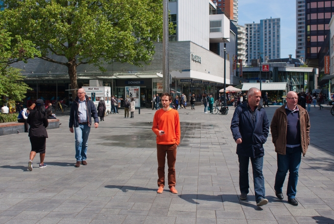
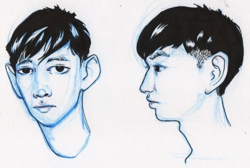
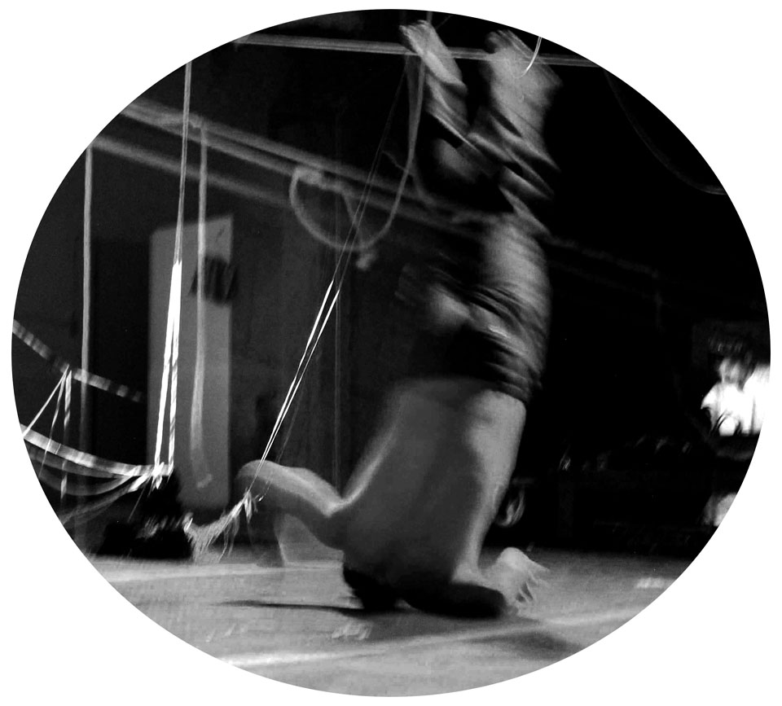

Alper Cugun Standing by Hubbub

View Project
Hubbub is a playful design studio based in Utrecht and Berlin. Hubbub makes things with which people can have fun, express themselves and gain a better understanding of the world
Standing is an app for playful activism. With Standing, you can stand still for a cause of your choosing in whatever place you feel is suitable. The app records how long and where you are standing and shares it live on the accompanying website. Once you have finished, your act is turned into a lasting record, which you can share as proof of your commitment to the cause
Amanda Holiday The Other Side

View Project
Artist / filmmaker Amanda Holiday was born in Sierra Leone and came to live in the UK at the age of 5. She completed a degree in Fine Art at Wimbledon School of Art and exhibited in landmark black art shows across the UK. Holiday moved into film and scriptwriting – directing a number of short experimental films for the Arts Council, BFI and Channel 4. Between 2001 and 2010 she lived in Cape Town where she wrote and directed several educational TV series. She is currently developing domestic art for Art Funk as well as continuing to develop film projects.
The Other Side is a fictive online artwork employing image, icon and word to present a fluid unravelling of imagined cosmic migration – the inter-galactic journeying of belonging, un-belonging and longing. Inspired in part by the short online art scroller - Be Eaten http://www.mintarts.com/projects/BeEaten.html The Other Side will present an Afro futuristic exploration of the notion of diaspora. By distilling universal codifiers, themes, emblems, alphabets and modes via drawing, charcoal scratching, word and tracing, The Other Side will present a coherent visual online scroll that is both otherworldly and yet strangely familiar.
André Sier Observation and Draw from (0,0,0)

View Project
André Sier works as artist-programmer at s373.net/x. Highlights the series 'struct', '747', 'space race', 'k.', 'uunniivveerrssee', 'piantadelmondo', immersive works in abstract spaces, often using site-specifc data from microphones and cameras, or synthesizing experiences with generative and chaotic maths.
Observation and Draw from (0,0,0) is an online interactive abstract drawing and cartography tool. It's basis and leitmotif of the piantadelmondo series of artworks by André Sier which create and map imaginary cities. Moving around and clicking with the mouse one operates and discovers new evanescent uncharted paths inscribed on the surface of a sphere, watching them unfold from the zero center point of the planetoid.
Anthony Jaspers Living Coulour
View Project
Hubbub is a playful design studio based in Utrecht and Berlin. Hubbub makes things with which people can have fun, express themselves and gain a better understanding of the world
Standing is an app for playful activism. With Standing, you can stand still for a cause of your choosing in whatever place you feel is suitable. The app records how long and where you are standing and shares it live on the accompanying website. Once you have finished, your act is turned into a lasting record, which you can share as proof of your commitment to the cause!
Ed Stastny Rextrusion
View Project
Ed Stastny has been making Internetbased art for over 20 years, starting with collaborative fiction projects on dialup BBS systems. When graphical exchange was possible via FTP and the thennew World Wide Web, Ed created collaborative art projects on his website, SITO.ORG
This exhibit is an interactive twodimensional image generated by the structured tessellation of handcrafted image tiles which are designed so their edges mutually match. The tiles will seamlessly fill space as the user changes the overall shape of the image
Geraldo Nolasco Magaña Work of Art in the Era of Digital Reproduction
View Project
He was awarded his degree in graphic art from the Mexico City Nuero Mondo University in 2000. He calls himself an audio-visual artist because as well as the visual elements in hiswork, music and dance are also utilised. Besides the traditional graphic genres he adopts ,he also takes photos, sculpts, designs fashion and makes films
He also plays music (the flauta) and is interested in modern dance. His ’board pictures’, with their ancient elements,are built up by the forms emerging from the level of the picture combined with differentmaterials such as beads. They are modern pieces of art yet still refer back to the the ritualsand spirits of past
Gustavo Valerga y Luciana Bedini Minusculas postales del equinoccio // Tiempo de Papayas
View Project
Para comenzar con la obra requerimos entre tres y cinco números telefónicos con la aplicación Whats app de miembros o colaboradores que sean elegidos por Unplace. Como modo de precaución y para que los archivos lleguen correctamente a ustedes, simultáneamente los enviaremos vía telefónica como así también a la dirección de e-mail que ustedes nos habiliten
Tiempo de Papayas es una plataforma de investigación, re-significación y difusión de diferentes manifestaciones poéticas en un determinado tiempo/espacio. Durante este año el proyecto fue creciendo al compartir la experiencia con varios artistas que se sumaron a la plataforma ( poetas, músicos, bailarines, artistas plásticos, performers) con el objetivo de rescatar la “voz”, la “esencia”, el “tono” del contexto en cada uno de los espacios visitados del proyecto, generando nuestros propios “paisajes” dentro de esos paisajes que percibimos (geografías, geometrías, los acentos, hábitos y costumbres, circulaciones y dinámicas de cada región)
Hanna Husberg Contingent Movements Archive
View Project
Hanna Husberg (b. 1981, Finland) is a Stockholm-based artist graduated from ENSB-A, Paris, in 2007 and currently a Phd in Practice candidate at the Vienna art academy. Through a focus on the troubled atmosphere her practice investigates how we perceive, and relate to anthropogenic climate change. Recent projects include Human Meteorology (Galleri Mejan, Stockholm, Chateau de Chamarande, France), The Free Sea (HIAP, Helsinki) and the curatorial project Contingent Movements Archive and Symposium conceived together with Laura McLean (Maldives Pavilion, Venice, UNESCO, Paris). Hanna is also a participant of Frontiers in Retreat, a research platform in Multidisciplinary Approaches to Ecology in Contemporary Art coordinated by HIAP, Helsinki.
Contingent Movements Archive is a web platform and symposium conceived for the Maldives Pavilion at the 55th Venice Biennale, and further developed for the UNESCO-COAL exhibition “Adapting in the Anthropocene”, UNESCO, Paris. The Free Sea is an essay film developed as part of the archival project
John F. Barber Radio Nouspace
View Project
John F. Barber teaches in the Creative Media & Digital Culture Program at Washington State University Vancouver. His sound art work has been jury selected for broadcast as part of RadiaLX (2014 and 2012, both in Lisbon, Portugal), and Echoes 1-4 (2013-2014, Lisbon, Portugal)
Radio Nouspace is a web-based radio station that archives and curates sound(s) of digital narrative and storytelling
Martha Hipley Hananet
View Project
I am an artist and designer living in Brooklyn, NY. I have always been enamored with both computers and traditional media, and work as an avid painter and programmer. I am always seeking opportunities to merge the concepts of traditional media with the increasingly open potential of new technology. I firmly believe that the only way to shape the future of tech is to embrace its potential and take ownership. I like fandoms and obsessions and digging in my heels rather than leaning in. Plus everyone should chill out and have a sense of humor
While experimenting with tumblr as a platform for painting with my project trampsloeil.tumblr.com, I discovered that the skew towards social media platforms as curatorial rather than creative is in part because these platforms are clumsy and offer the user few opportunities to make rather than repeat. Why share original work when images are compressed and lost amid memes